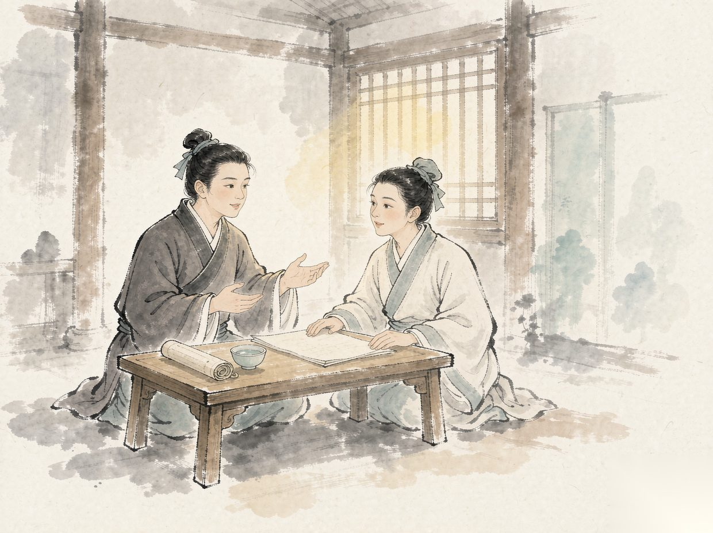
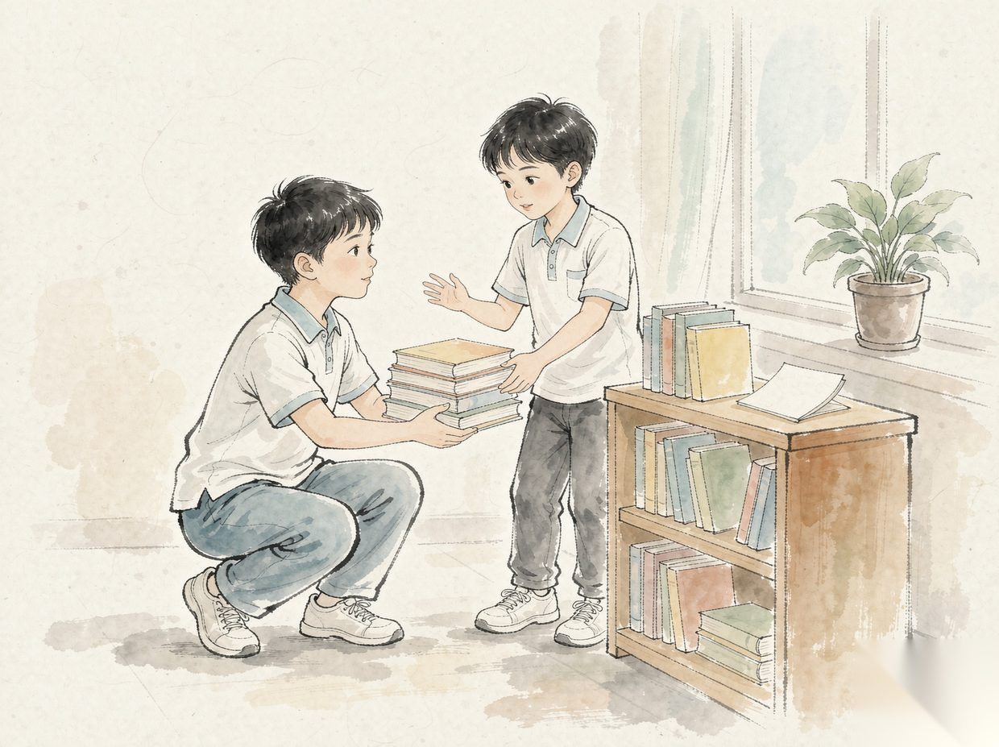

前面我们仰望天地，看见日月星辰恒常有序。天地有秩序，人群相处也有根本的准则，叫做三纲。第一纲，便是君臣义。
这里先要破除一个常见误解：不是君可以随意命令、臣子只能顺从。
「义」是核心。君的本分，是公正领责、体恤众人；臣的本分，是坦诚辅佐、恪尽职守。
二者的纽带是「合宜」，不是单方面服从。一方守本分，一方尽职责，彼此以道义相待，才叫君臣义。

放到今天来看，君臣可以类比团队里的带领者与配合者。
带领者不独断，做事公道；配合者不敷衍，尽心尽责。
关系的根基是道义、责任，而不是权势压迫。

职位有分工，人格平等。分工是为了把事办好，不是为了分出高低。
上位者凭权势要求服从，下位者盲目附和；把关系变成强弱压制。
领责者公正，辅佐者坦诚；以合宜的本分，维系群体的有序协作。
「君臣」两个字，最容易滑向旧时代的专制解读。三条提示，把落点移到协作。
一、重点落在「各司其职、双向负责」。可以用班级、小组、社团分工举例，避开专制式解读。
二、区分权责与尊卑。职位有分工，人格平等。
三、承接教与学的二分。家长示范分工协作、沟通负责，属施教一侧；孩子在小组活动里体会本分与配合，是自主修习。
接上选择力练习：道义本分的原则不变，孩子可以学习表达想法，不盲从，也不推诿责任。
纲，网之大绳；义，宜也。全句：所谓三纲，第一便是君臣之间，以道义合宜为准则。
前面由天道三才、三光，下落到人伦社群秩序，天人次序连贯：天道有序，故人间人伦亦有纲纪。
二 · 命题考辨勘误重点：后世长期把三纲简化为单向服从，「君要臣死，臣不得不死」——这是后世流变，并非原典本意。
原始儒学的君臣关系是相对、双向的：「君使臣以礼，臣事君以忠」。
忠不是愚从，是忠于事理、忠于本分。君若无礼失义，臣可谏诤。
纲，是维系关系的主线，不是压迫的枷锁。三纲是三组核心人伦的主线：君臣、父子、夫妇，各有其相宜之道。
三 · 中西对照儒家：君臣以义合，道合则共事，道不合则可去。
现代组织理论：管理者与成员之间是权责契约，双向责任。
西方契约思想：以约定界定权责；儒家则以「义」、以内在本分为根基。
反向思辨：纲纪很容易固化成等级尊卑，压制下层的表达——这是后世异化，需持续辨析。
四 · 与前后课的张力次第链条继续延伸：……三才者，天地人 → 三光者，日月星 → 三纲者，君臣义。
呼应第十三课「人不学，不知义」：这一句直接点出「义」在公共人伦之中的落地。
呼应第十二课「玉不琢，不成器」：在共事协作之中打磨自己，懂得尽责、知分寸。
呼应第四课「教之道，贵以专」：教化不止于家庭，也要学习群体协作的根本准则。
一、如果上位者持续失义、行事不公，下位者的本分应当是什么？
二、现代社会没有传统君臣，这套「义」的准则如何平移到职场、团队与公共治理？
三、群体纲纪，如何在秩序与个体自由之间找到平衡？